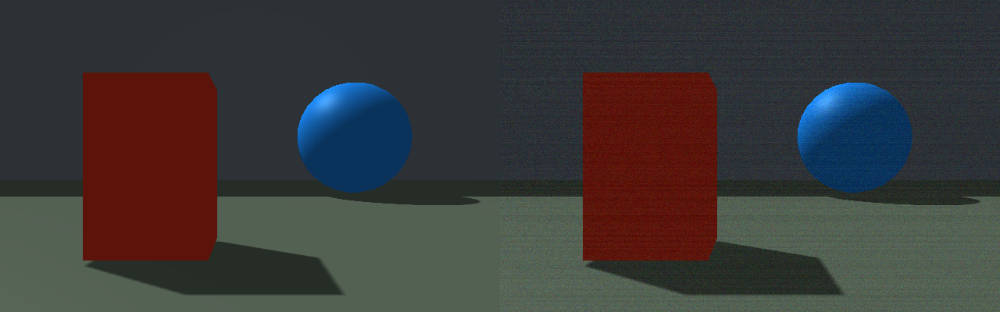
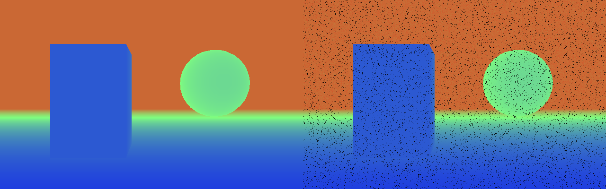

Rayrai sensor noise
rayrai_sensor_noise is an offscreen example that saves clean/noisy RGB and
depth captures of the same rendered scene. It needs a current RaiSim/Rayrai
build with the sensor-noise API, an OpenGL context, and no robot assets.
./rayrai_sensor_noise
The example takes no arguments and writes rgb_noise.png and depth_noise.png
to its working directory. Run it in the directory where you want those images.
On Linux without a display, select SDL’s offscreen video driver:
SDL_VIDEODRIVER=offscreen ./rayrai_sensor_noise
The left panel is clean and the right is noisy. RGB combines read noise, the high photon-count shot-noise approximation, and row offsets. Depth combines distance-dependent noise, 2 cm quantization, and 4% dropout (black pixels). The deliberately visible settings illustrate the effects; calibrate the parameters for your device.




The source changes sensor properties between two readbacks of the same render
target. This isolates measurement noise from changes in scene state and avoids
a second scene render. getRawImage() applies noise automatically; manual
setters preserve input until applyNoise() is explicitly called.
See Sensor noise for model details and LiDAR configuration.
// Copyright (c) 2026 Raion Robotics Inc. All rights reserved.
// Render once and compare clean and noisy captures of exactly the same scene.
#include <SDL.h>
#include <algorithm>
#include <cmath>
#include <filesystem>
#include <iostream>
#include <memory>
#include <stdexcept>
#include <string>
#include <vector>
#define STB_IMAGE_WRITE_IMPLEMENTATION
#include "stb/stb_image_write.h"
#include "raisim/World.hpp"
#include "raisim/sensors/RGBSensor.hpp"
#include "raisim/sensors/DepthSensor.hpp"
#include "rayrai/Camera.hpp"
#include "rayrai/RayraiWindow.hpp"
#include "rayrai/Visuals.hpp"
namespace {
constexpr int kWidth = 640, kHeight = 400;
void saveComparison(const std::filesystem::path& path, const std::vector<unsigned char>& clean,
const std::vector<unsigned char>& noisy) {
std::vector<unsigned char> combined(size_t(kWidth) * kHeight * 8);
for (int row = 0; row < kHeight; ++row) {
auto* dst = combined.data() + size_t(row) * kWidth * 8;
std::copy_n(clean.data() + size_t(row) * kWidth * 4, kWidth * 4, dst);
std::copy_n(noisy.data() + size_t(row) * kWidth * 4, kWidth * 4, dst + kWidth * 4);
}
if (!stbi_write_png(path.string().c_str(), kWidth * 2, kHeight, 4, combined.data(), kWidth * 8))
throw std::runtime_error("Cannot write " + path.string());
}
std::vector<unsigned char> colorImage(const std::vector<char>& bgra) {
std::vector<unsigned char> rgba(bgra.begin(), bgra.end());
for (size_t i = 0; i < rgba.size(); i += 4) std::swap(rgba[i], rgba[i + 2]);
return rgba;
}
std::vector<unsigned char> depthImage(const std::vector<float>& depth) {
std::vector<unsigned char> rgba(depth.size() * 4, 255);
for (size_t i = 0; i < depth.size(); ++i) {
const bool valid = std::isfinite(depth[i]) && depth[i] > 0.;
const float t = valid ? std::clamp(depth[i] / 20.f, 0.f, 1.f) : 0.f;
rgba[i * 4] = valid ? static_cast<unsigned char>(255.f * t) : 0;
rgba[i * 4 + 1] = valid ? static_cast<unsigned char>(255.f * (1.f - std::abs(2.f * t - 1.f))) : 0;
rgba[i * 4 + 2] = valid ? static_cast<unsigned char>(255.f * (1.f - t)) : 0;
}
return rgba;
}
void aim(raisin::Camera& camera) {
camera.position = {0.f, 0.f, 1.f}; camera.front = {1.f, 0.f, 0.f};
camera.up = camera.worldUp = {0.f, 0.f, 1.f}; camera.right = {0.f, -1.f, 0.f};
camera.target = camera.position + camera.front;
}
void render(const std::filesystem::path& out) {
auto world = std::make_shared<raisim::World>();
raisin::RayraiWindow viewer(world, kWidth, kHeight, raisin::RayraiWindow::ThreadingMode::SingleThread);
viewer.setAsyncMeshLoadingEnabled(false);
auto wall = viewer.addVisualBox("wall", 0.2, 40., 30., 0.45f, 0.5f, 0.55f, 1.f);
wall->setPosition({16.f, 0.f, 1.f});
wall->setDetectable(true);
auto near = viewer.addVisualBox("near", 1., 1.2, 1.8, 0.9f, 0.2f, 0.1f, 1.f);
near->setPosition({4.f, 1.f, 0.9f});
near->setDetectable(true);
auto far = viewer.addVisualSphere("far", 1.5, 0.1f, 0.5f, 0.9f, 1.f);
far->setPosition({10.f, -2.8f, 1.5f});
far->setDetectable(true);
auto floor = viewer.addVisualBox("floor", 40., 40., 0.1, 0.3f, 0.35f, 0.3f, 1.f);
floor->setPosition({10.f, 0.f, -0.1f});
floor->setDetectable(true);
raisim::Vec<3> pos; pos.setZero(); raisim::Mat<3, 3> rot; rot.setIdentity();
raisim::RGBCamera::RGBCameraProperties rp;
rp.width = kWidth; rp.height = kHeight; rp.clipNear = 0.05; rp.clipFar = 20.; rp.hFOV = 1.2;
raisim::RGBCamera rgb(rp, nullptr, pos, rot);
raisin::Camera colorCamera(rgb); aim(colorCamera);
raisin::RayraiWindow::RenderOverrides overrides;
overrides.doShadows = true; overrides.drawCoordinateFrames = false;
overrides.drawPointClouds = false; overrides.drawWeatherEffects = false;
overrides.postProcess = false;
viewer.renderWithExternalCamera(colorCamera, overrides);
colorCamera.getRawImage(rgb);
const auto cleanRgb = rgb.getImageBuffer();
rp.noiseType = decltype(rp.noiseType)::GAUSSIAN; rp.std = 0.025;
rp.shotNoise = 0.001; rp.rowNoiseStd = 0.008; rp.seed = 43;
rgb.setProperties(rp);
colorCamera.getRawImage(rgb); // Noise applies in place, without another scene render.
saveComparison(out / "rgb_noise.png", colorImage(cleanRgb), colorImage(rgb.getImageBuffer()));
raisim::DepthCamera::DepthCameraProperties dp;
dp.width = kWidth; dp.height = kHeight; dp.clipNear = 0.05; dp.clipFar = 20.; dp.hFOV = 1.2;
raisim::DepthCamera depth(dp, nullptr, pos, rot);
raisin::Camera depthCamera(depth); aim(depthCamera);
viewer.renderDepthPlaneDistance(depthCamera, nullptr, true, false);
depthCamera.getRawImage(depth);
const auto cleanDepth = depth.getDepthArray();
auto& p = depth.getProperties();
p.noiseType = decltype(p.noiseType)::GAUSSIAN; p.std = 0.002;
p.stdDepthSquared = 0.001; p.resolution = 0.02; p.dropoutProbability = 0.04; p.seed = 101;
depth.updateRayDirections();
depthCamera.getRawImage(depth);
saveComparison(out / "depth_noise.png", depthImage(cleanDepth), depthImage(depth.getDepthArray()));
std::cout << "Saved RGB and depth comparisons to " << out << " (clean left, noisy right)\n";
}
} // namespace
int main() {
const auto out = std::filesystem::current_path();
SDL_Window* window = nullptr; SDL_GLContext context = nullptr;
int result = 0;
try {
std::filesystem::create_directories(out);
raisin::RayraiWindow::createOffscreenGlContext(window, context, "sensor noise");
render(out);
} catch (const std::exception& e) { std::cerr << e.what() << '\n'; result = 1; }
if (context) SDL_GL_DeleteContext(context);
if (window) SDL_DestroyWindow(window);
SDL_Quit();
return result;
}